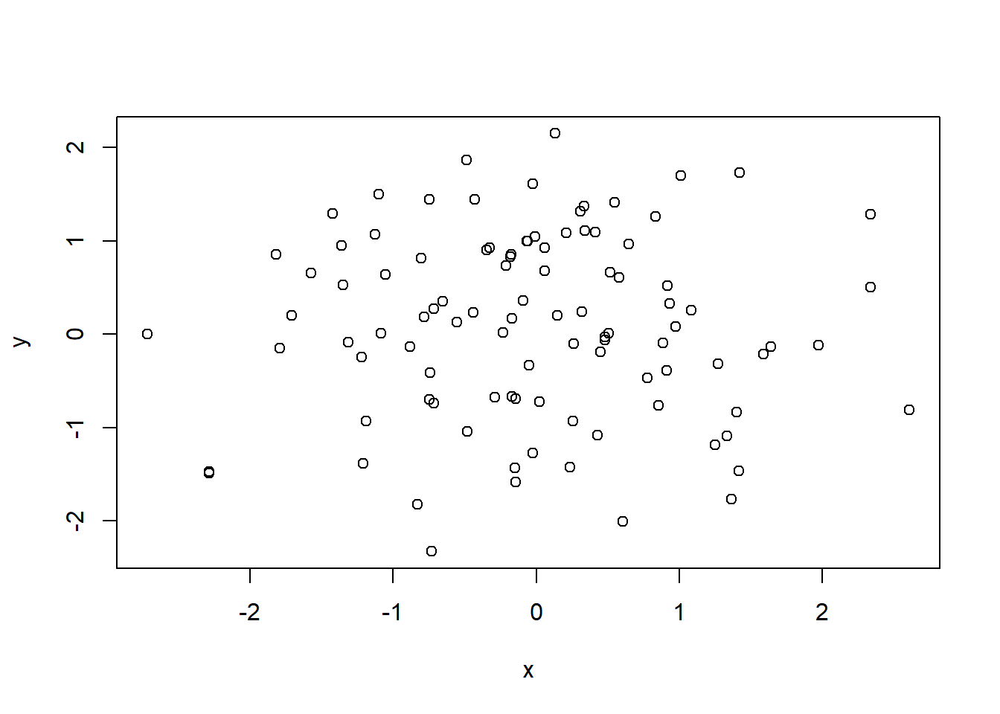
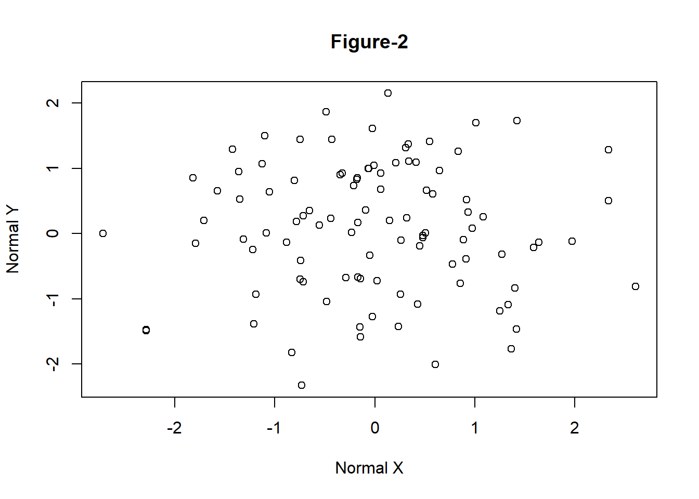

5.1 Basic Plots in R
5.1.1 Scatter Plot
- One of the most popular and most frequently used functions to build a new plot in R is the \(\mathtt{plot}\) function.
- Plot is a high level generic graphic function which depends on the class of the first argument (usually the data object). For example if the first argument is of the class zoo which is a timeseries object the \(\mathtt{plot}\) function will call \(\mathtt{plot.zoo}\) from the R package zoo. This time series plot can be a single timeseries line plot or multiple time series stacked plot.
# Generate two random normal vectors
x = rnorm(100)
y = rnorm(100)
# plot x and y using the plot() function
plot(x, y)

Figure 5.1: Simple Scatter Plot
- There are various other arguments which can be modified to change the overall presentation of the plot and even the type of plot.
function (x, y = NULL, type = "p", xlim = NULL, ylim = NULL,
log = "", main = NULL, sub = NULL, xlab = NULL, ylab = NULL,
ann = par("ann"), axes = TRUE, frame.plot = axes, panel.first = NULL,
panel.last = NULL, asp = NA, xgap.axis = NA, ygap.axis = NA,
...)
NULL- The following example uses the argument \(\mathtt{main}\) in the \(\mathtt{plot}\) function to include a title on the plot along with axis tiles using the arguments \(\mathtt{xlab}\) and \(\mathtt{ylab}\).

Figure 5.2: Simple Scatter Plot with Title
5.1.2 Line Plot
- The following example demonstrates how to create a line plot using Microsoft prices given in the data file \(\mathtt{data\_fin.RData}\).
# change the working directory to the folder containing data_fin.csv or provide
# the full path with the filename
load("data/data_fin.RData")
# column names
colnames(FinData) [1] "Date" "DJI" "AXP" "MMM" "ATT" "BA" "CAT" "CISCO" "DD"
[10] "XOM" "GE" "GS" "HD" "IBM" "INTC" "JNJ" "JPM" "MRK"
[19] "MCD" "MSFT" "NKE" # plot a line plot for Dow Jones stock index prices
plot(FinData$MSFT, type = "l", main = "Microsoft Prices", ylab = "Prices")
Figure 5.3: Line Chart
- Plotting it as Time Series data
- Various R packages provide functionality to plot specific data types. For example, \(\mathtt{zoo}\) can be used to plot time series data.
Attaching package: 'zoo'The following objects are masked from 'package:base':
as.Date, as.Date.numeric# convert data to class zoo
FinData.ts = zoo(FinData[, 2:5], order.by = FinData$Date)
# plot multiple stacked plot
plot(FinData.ts, col = gray.colors(4)) #figure-4
Figure 5.4: Time Series Plot
5.1.3 Bar Plot
- The function \(\mathtt{barplot}\) creates bar graphs in R.
- The main data argument in this function is \(\mathtt{height}\) which can be a vector or a matrix of values describing the bars which make up the plot. If \(\mathtt{height}\)is a matrix the bar graph can be a stacked graph or a juxtaposed graph with \(\mathtt{besides=TRUE}\)
load("data/GDP_Yearly.RData")
par1 = par()
par(ask = F)
barplot(height = GDP$Australia, names.arg = GDP$Year, ylab = "GDP Per Capita") #figure-5
Figure 5.5: Bar Graph with argument height as vector
It is also possible to create a yearly vertical stacked or yearly horizontal grouped bar plot for the GDP data.
The data has to be first converted into a matrix to create stacked or grouped barplots.
In this example the argument \(\mathtt{legend}\) specifies the names (Years) to appear in the legend and the argument \(\mathtt{args.legend}\) specifies the position (x=”top”), alignment (horiz=TRUE) and distance from the margin (inset=-0.1).
# convert data to matrix
data = as.matrix(GDP[, 2:12])
# create row names
rownames(data) = GDP$Year
# plot a stacked bar plot with legend showing the years
barplot(height = data[1:5, ], beside = FALSE, col = rainbow(5), legend = rownames(data[1:5,
]), args.legend = list(x = "top", horiz = TRUE, inset = -0.1), cex.names = 0.6)
Figure 5.6: Vertical Stacked Barplot
5.1.4 Pie Chart
- R provides the function \(\mathtt{pie}\) to create pie graphs. \(\mathtt{labels}\).

Figure 1.2: Pie Chart
5.1.5 Scatter Plot
- The basic \(\mathtt{plot}\) function plots a scatter plot for bivariate or univariate data. It is also possible to create a scatterplot for multivariate data using the \(\mathtt{pairs}\) function.

Figure 5.7: Scatterplot